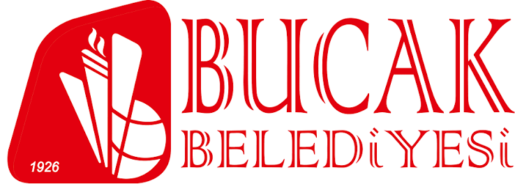
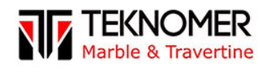
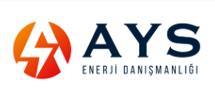
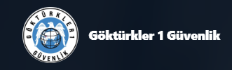
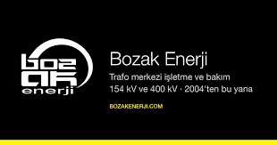
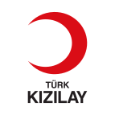

İş güvenliği uzmanlığı
Çalışma ortamındaki tehlikelerin belirlenmesi ve risklerin azaltılmasına yönelik uzman desteği.
Bilgi alınİŞ SAĞLIĞI VE GÜVENLİĞİNDE YANINIZDAYIZ
İş yerinizin ihtiyaçlarına uygun iş sağlığı ve güvenliği hizmetleriyle, güvenli çalışma kültürünü birlikte güçlendirelim.
İşinize uygun çözümler
İhtiyacınızı anlayan, anlaşılır ve planlı hizmet yaklaşımı.
GÜÇLÜ EKİBİMİZ
Farklı uzmanlıkları bir araya getiren ekibimizle iş sağlığı ve güvenliği süreçlerinizde yanınızdayız.
HİZMETLERİMİZ
İş sağlığı ve güvenliği süreçlerinizi, çalışma alanınıza ve ihtiyaçlarınıza göre planlayın.
Çalışma ortamındaki tehlikelerin belirlenmesi ve risklerin azaltılmasına yönelik uzman desteği.
Bilgi alınİş yeri sağlık gözetimi süreçlerinin ve çalışan sağlığı çalışmalarının planlanmasına destek.
Bilgi alınİş yeri sağlık hizmetlerinin yürütülmesinde ihtiyaçlarınıza göre destekleyici çözümler.
Bilgi alınİş yerindeki tehlikelerin değerlendirilmesi ve önleyici adımların belirlenmesine rehberlik.
Bilgi alınÇalışanların iş sağlığı ve güvenliği farkındalığını güçlendiren eğitim çözümleri.
Bilgi alınÇalışanların yangın anında doğru hareket etme ve müdahale farkındalığını geliştirmeye yönelik eğitim.
Bilgi alınYüksekte çalışmalarda güvenli çalışma yöntemleri ve risklere karşı farkındalık eğitimi.
Bilgi alınİş yeri sağlık taramalarının, iş akışınızı gözeten mobil çözümlerle planlanması.
Bilgi alın3 ilk yardım eğitmenimizle çalışanlara yönelik ilk yardım eğitimlerinin planlanması.
Bilgi alınAcil durumlara hazırlık, eylem planları ve tatbikat süreçlerine yönelik destek.
Bilgi alınİş yerinizin koşullarına uygun patlamadan korunma dokümanı çalışmalarına destek.
Bilgi alınİş yerinizin mesleki yeterlilik ihtiyaçlarına yönelik bilgilendirme ve yönlendirme.
Bilgi alınİş kolunuzu ve ihtiyaçlarınızı konuşalım; size uygun hizmet planını birlikte oluşturalım.
Bize ulaşınREFERANSLARIMIZ
Hizmet verdiğimiz iş yerlerinden seçilmiş kurum ve işletmeler.

Bucak Belediyesi
Teknomer Marble & Travertine
AYS Enerji Danışmanlığı
Göktürkler 1 Güvenlik
Bozak Enerji
Türk KızılayYAKLAŞIMIMIZ
İş sağlığı ve güvenliği, yalnızca mevzuat gerekliliklerini karşılamak değil; çalışanların kendini güvende hissettiği bir çalışma ortamı oluşturmaktır.
İhtiyacı anlarız
İş yerinizin koşullarını ve önceliklerini tanırız.
Birlikte planlarız
Size uygun, uygulanabilir hizmet adımlarını belirleriz.
Süreci takip ederiz
İSG çalışmalarının düzenli ve anlaşılır ilerlemesini destekleriz.
BUCAK OSGB · 2020'DEN BERİ
İş sağlığı ve güvenliği; çalışanı, işvereni ve iş yerini birlikte koruyan, sağlıklı ve verimli çalışma hayatının temelidir.
Çalışan sağlığının korunduğu, risklerin önceden fark edildiği ve herkesin güvenli çalışma sorumluluğunu paylaştığı bir iş hayatının yaygınlaşmasına katkı sunmak.
İş yerlerinin ihtiyaçlarına uygun İSG hizmetleriyle çalışanı, işvereni ve iş yerini korumaya; önleyici güvenlik kültürünü ve verimli çalışma ortamlarını desteklemeye çalışmak.
Önlemek, sonuçlarıyla mücadele etmekten daha güçlüdür. Etkin bir iş sağlığı ve güvenliği kültürü iş kazası riskini azaltmaya ve kazalardan doğabilecek hukuki ve maddi kayıpların önüne geçmeye yardımcı olur. Hiçbir uygulama tüm riskleri tamamen ortadan kaldırmayı garanti edemez; bu nedenle çalışan sağlığını ve güvenliğini sürekli gözetmek önemlidir.
SIKÇA SORULAN SORULAR
İş yerinizin tehlike sınıfı, çalışan sayısı ve çalışma biçimi yükümlülükleri etkileyebilir. Size özel durum için bizimle iletişime geçin.
İş sağlığı ve güvenliği (İSG), çalışanları ve iş yerini çalışma sırasında oluşabilecek risklerden korumaya yönelik önleyici çalışmaların bütünüdür. Risk değerlendirmesi, eğitim, sağlık gözetimi ve iş yerinin düzenli takibiyle güvenli çalışma kültürünü destekler.
6331 sayılı Kanun kapsamındaki kamu ve özel sektör iş yerlerinde iş sağlığı ve güvenliği yükümlülükleri bulunur. İş güvenliği uzmanı ve iş yeri hekimi görevlendirme gibi hizmetlerin kapsamı; tehlike sınıfına, çalışan sayısına ve iş yerinin durumuna göre belirlenir. Özel istisnalar olabileceğinden iş yerinize göre değerlendirme yapılmalıdır.
Az tehlikeli sınıfta olmak tek başına İSG yükümlülüklerinden muaf olduğunuz anlamına gelmez. 50'den az çalışanı bulunan az tehlikeli iş yerleri için iş güvenliği uzmanı ve iş yeri hekimi görevlendirme yükümlülükleri 1 Ocak 2025 itibarıyla yürürlüktedir. İş yerinizin çalışan sayısı ve koşullarına göre gereken hizmeti birlikte netleştirebiliriz.
Risklerin erken fark edilmesine, çalışanların bilinçlenmesine ve iş süreçlerinin daha güvenli yürütülmesine yardımcı olur. Önleyici yaklaşım iş kazası olasılığını ve kazalardan doğabilecek iş kaybı ile hukuki ve maddi riskleri azaltabilir; hiçbir hizmet tüm riskleri veya sonuçları tamamen ortadan kaldırmayı garanti etmez.
Öğrencinin iş yerinde karşılaşabileceği riskleri, alacağı eğitimi, gözetimi ve gerekli koruyucu ekipmanı iş yeri ve okul arasındaki düzenlemelerle birlikte değerlendirin. Öğrencinin statüsü, iş yerinin tehlike sınıfı ve çalışan sayısı hizmet yükümlülüklerini etkileyebilir; öğrenci/çırak bulunmasını ayrıca OSGB'nizle paylaşarak iş yerinize özel değerlendirme isteyin.
İLETİŞİM
İhtiyacınızı ve iş yerinizin koşullarını konuşmak için bize ulaşın. Size uygun hizmet planını birlikte değerlendirelim.
Hizmetlerimizi inceleyin